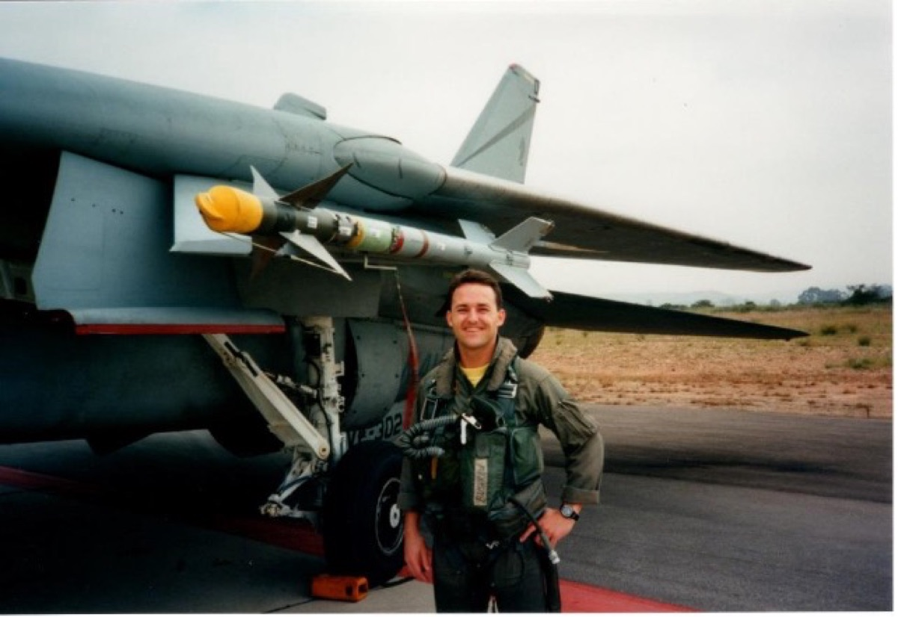

01 · Naval Aviator
Wings of Gold.
Paul earned his Wings of Gold as a Navy carrier aviator. The carrier landing is unforgiving in a way that civilian flying rarely is, and the habits formed there, the briefing-room discipline and the consideration of every variable before engine start, have carried forward through every cockpit since.
The Navy years set the tempo. They also set the expectation that a flight should be a known thing rather than an emerging story.